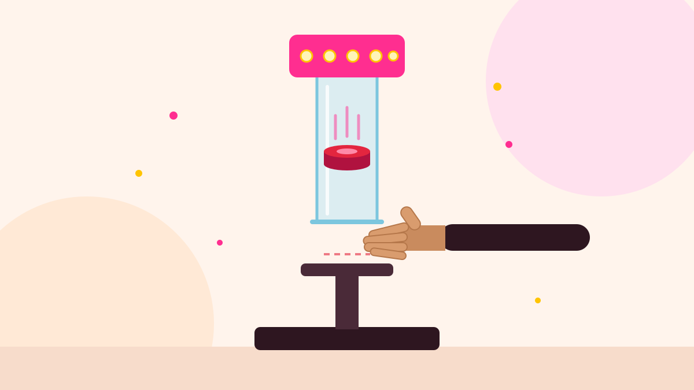

Home · Games · Catch the Striker
Catch the Striker Game on Rent in Delhi NCR

Looking for the catch the striker game on rent in Delhi NCR? It is a one-shot reflex game. The striker is held at the top of a tall stand and let go without warning. The player waits at the bottom with an open hand and has a split second to catch it before it lands.
It is quick to play, easy to follow from across the room, and needs only a small corner of a hall, office floor or lawn, so it fits into birthday parties, family days and corporate events alike.
How to play catch the striker
- The player stands at the bottom of the stand with a hand ready.
- The coordinator lets the striker go at a moment nobody can guess.
- Catch it and you score. Best of three takes the prize.
Where it works best
- Corporate events and employee engagement days
- Carnivals, melas and family days
- College fests and school events
- Birthday parties and house parties
Games to pair with it
Put it next to catch the stick for a reflex corner, or add the hammer game and punching power game for a strength zone.
Catch the striker game on rent across Delhi NCR
We deliver catch the striker game on rent to homes, farmhouses, banquet halls, hotels, offices, schools and societies across Delhi, Gurgaon (Gurugram), Noida, Greater Noida, Faridabad, Ghaziabad and Manesar. Our team sets everything up before your guests arrive and takes it all away after the event.
What's included
- Delivery, set-up and take-down at your venue
- A coordinator to run the rounds and keep score
- Prizes and gifts for winners, if you would like us to arrange them
Call 98117 88643 or send an enquiry with your date, venue and guest count, and we will suggest the right set-up and send a quote.
Frequently asked questions
- What is the catch the striker game?
- A reflex game: the striker is dropped without warning from the top of a stand and the player has to catch it before it lands.
- How is it different from catch the stick?
- Catch the stick drops a row of sticks one after another. Catch the striker is a single drop: one striker, one chance.
- Is this the hammer 'high striker' game?
- No. The game where you swing a hammer to ring a bell is our hammer game, which you can rent separately.
- Which areas do you cover?
- Delhi, Gurgaon (Gurugram), Noida, Greater Noida, Faridabad, Ghaziabad and Manesar. Call 98117 88643 for a quote.